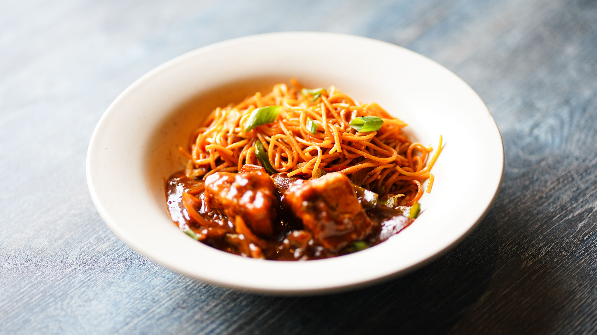

Yakissoba
Home

Descrição
Originário da culinária chinesa e popularizado no Japão, o yakissoba é um prato que conquistou paladares ao redor do mundo, tornando-se uma iguaria apreciada por sua combinação única de sabores, texturas e aromas. Este prato, cujo nome significa literalmente "macarrão grelhado", é uma obra-prima da culinária asiática que encanta tanto pelo seu sabor quanto pela sua versatilidade. Aqui você irá conferir uma receita de yakissoba simples e fácil, preparada com macarrão espaguete e ingredientes que possivelmente você terá na sua geladeira. Veja como fazer yakissoba e tenha uma refeição incrível!
Ingredientes
- 300g de espaguete
- 1 colher (sopa) de óleo
- 1/2 maço pequeno de couve-flor
- 400g de carne cortada em tiras
- 1 cenoura cortada em rodelas
- 1 colher (de sopa) de amido de milho, dissolvido em 50 ml de água
- acelga a gosto
- 250 ml de água
- 100g de champignon
- 10 colheres (sopa) de molho shoyu
- 1/2 maço pequeno de brócolis
- 1 cebola grande cortada em pedaços médios
Passos
- Cozinhe o macarrão ao ponto al dente e reserve
- Em uma panela, adicione a carne, o azeite e a cebola e refogue bem
- Adicione o shoyu e cozinhe 3 minutos em fogo médio
- Adicione mais água, espere levantar fervura e adicione o amido de milho
- Mexa até engrossar, abaixe o fogo e adicione o champignon, a couve-flor, o brócolis e a cenoura
- Cozinhe por 8 minutos e adicione a acelga e o macarrão
- Misture bem, acerte o sal e tampe a panela por mais 1 minuto
- Está pronto para servir!